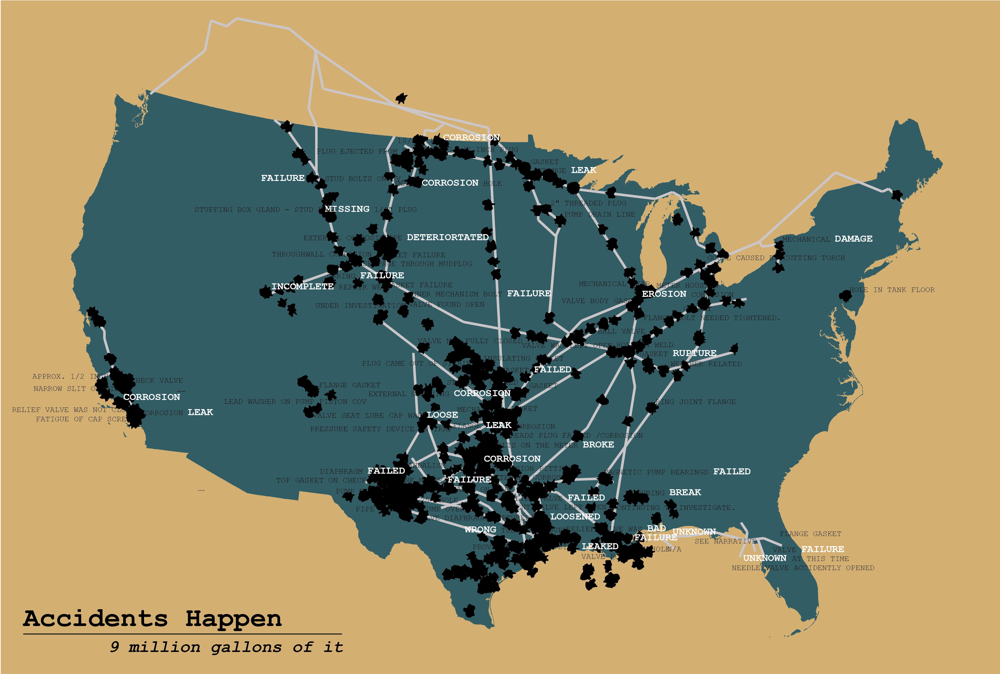

Lab 1
{kind=link}
Oil Spills
This map shows oil spills in the US, I used words to highlight the issues. Download Image
I am a Humboldt State student majoring in Geography with a minor in GIS. My interests include the Ma-le'l Dunes and Snowy Plovers, as well as highlighting anthropogenic influences on the environment.
This map shows oil spills in the US, I used words to highlight the issues. Download Image
A bivariate map highlighting those that voted against their self interests. Download Image

Another bivariate map showing cow population and cafos relationship. Download Image

A map depicting potential inundation in the area. Download Image
Data is gathered from the United Nations Refugee Agency from the year 2012-2016. Download Image

A map representing the last records of Grizzly Bears by county in the Sierra Nevada region. Download Image

A visual guide to the elevation of the area, including an excerpt on the Ord's Kangaroo Rat that roams the main dune. Download Image
Humboldt County on Terrain
Drop me a line
{kind=link}
{kind=link}